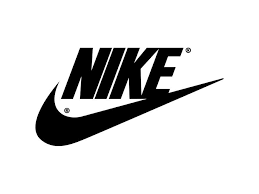

Najki[a] (engl. Nike) jedan je od vodećih američkih proizvođača sportske opreme. Sedište ove firme nalazi se u Portlandu, u Oregonu, u SAD. Ova kompanija je do 2008. godine zaposlila preko 30.000 ljudi širom sveta. „Najki” je sponzor mnogih visoko rangiranih sportista i sportskih timova širom sveta, sa svuda prepoznatljivom sloganom (eng) „Just do it”. Današnji konkurenti su nemački „Adidas” i „Puma”. Logo firme (Svuš), je jedan od najpoznatijih logoa na svetu.
Firmu su 1964. osnovali Bil Bouerman (bio je sportski trener Univerziteta u Oregonu) i Filip Najt. U prvoj godini poslovanja firme, njen promet je iznosio svega 8.000 američkih dolara. Logo firme — Svuš (engl. Swoosh) nacrtala je student grafičkog dizajna Karolin Dejvidson, i to za honorar od svega 35 dolara. Naziv „Najki” je firmi dat po grčkoj boginji trijumfa i pobede — Niki, a prvi put je objavljen 1972. Prodaju svojih patika i sportske opreme na evropsko tržište „Najki” je proširio šest godina kasnije.
Najki ima više od 700 radnji širom sveta, i predstavništva u 45 država izvan SAD. Većina fabrika je u Aziji, uključujući Indoneziju, Kinu, Tajvan, Vijetnam, Pakistan, Filipine i Malaziju. Najki su bili među prvim firmama koje su koristile jeftinu, često i dečju, radnu snagu, zbog čega su bile više puta optuživane.
Najki je sponzorisao veliki broj atletičara, i profesionalnih sportista, fokusirajući pažnju na svoje proizvode, ali je takođe pomogao i mnogim nepoznatim sportistima da dožive svojim 5 minuta slave. Naravno sve je to u funkciji reklame.Najki su poznate po tome što su među prvima sponzorisale sportiste koji su poznati po skandalima i nesportskom ponašanju jer su bili u centru zbivanja.
Početak
1. Gucci
3. Versace
4. Calvin Klein
5. Podaci